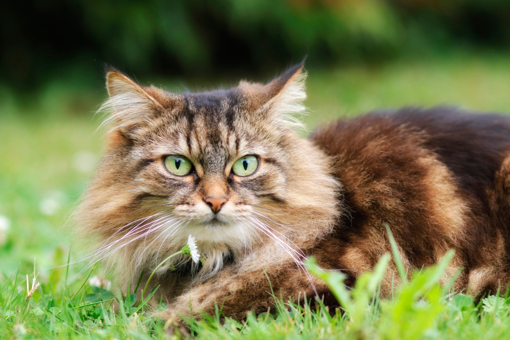

Animals get their energy from other living things. Usually, they eat them or are parasites. Animals, plants, fungi, and some other living things have complex cells, so they are grouped together as eukaryotes.
The study of animals is called zoology.[1][2][3] The study of ancient life is called palaeontology.
Most animals are mobile, meaning they can move around. Animals take in oxygen, and give out carbon dioxide.[4] This cellular respiration is part of their metabolism (chemical working). In both these ways they are different from plants. Also, the cells of animals have different cell membranes to other eukaryotes like plants and fungi.
Plants are also multicellular eukaryotic organisms, but live by using light, water and basic elements to make their tissues.
Dog
Dogs are mammals, usually to be kept as pets, for work on farms or for the police. Some dogs are trained to be rescue dogs and join teams such as mountain rescue.
They have been bred by humans from ancestral wolves. They were the first animal to live with humans.
There was a lot of different types among wolves in the Late Pleistocene.[1] The dingo is also a dog, but many dingos have become wild animals again and live in the wild, away from humans (parts of Australia).
Cat
Cats, also called domestic cats (Felis catus), are small, carnivorous (meat eating) mammals, of the family Felidae. Cats have been domesticated (tamed) for nearly 10,000 years.[6]
Domestic cats may be called 'house cats' when kept as indoor pets.[7] They are one of the most popular pets in the world. Humans keep them for hunting mice and rats, and as friends. There are also farm cats, which keep mice and rats away; and feral cats, which are domestic cats that live away from humans.[8] In 2021, there were about 220 million pet cats and 480 million feral cats in the world.

Plants
Plants are one of six big groups (kingdoms) of living things. They are autotrophic eukaryotes, this means they have complex cells, and make their own food. Usually, they cannot move (not counting growth).Plants need sunlight, soil and water whereas seeds need warmth.
Plants include familiar types such as trees, herbs, bushes, grasses, vines, ferns, mosses, and green algae. The scientific study of plants, known as botany, has identified about 391,000 extant (living) species of plants. [5]
Hibiscus
Hibiscus[2][3] is a genus of flowering plants in the mallow family, Malvaceae. The genus is quite large, comprising several hundred species that are native to warm temperate, subtropical and tropical regions throughout the world. Member species are renowned for their large, showy flowers and those species are commonly known simply as "hibiscus", or less widely known as rose mallow. The genus includes both annual and perennial herbaceous plants, as well as woody shrubs and small trees.
Tulsi
Ocimum tenuiflorum, commonly known as it, is an aromatic perennial plant in the family Lamiaceae.[2][3] It is widely cultivated throughout the Southeast Asian tropics.[1][4][5] It is native to tropical and subtropical regions of Asia, Australses, and also for its essential oil. It is widely used as an herbal tea, commonly used in Ayurveda, and has a place within the Vaishnava tradition of Hinduism, in which devotees perform worship involving holy basil plants or leaves.
/trio-of-vibrant-red-hibiscus-flowers-with-bright-yellow-stigma-growing-in-garden-pot-845218812-5abea591119fa80037eef63e.jpg)